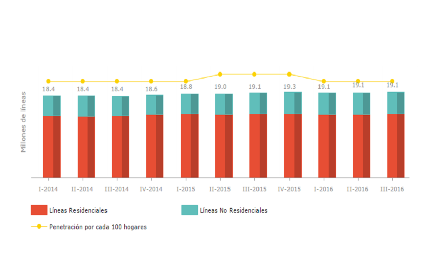
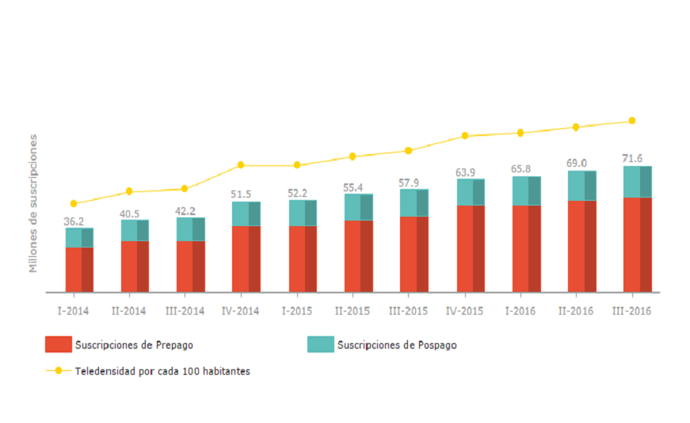
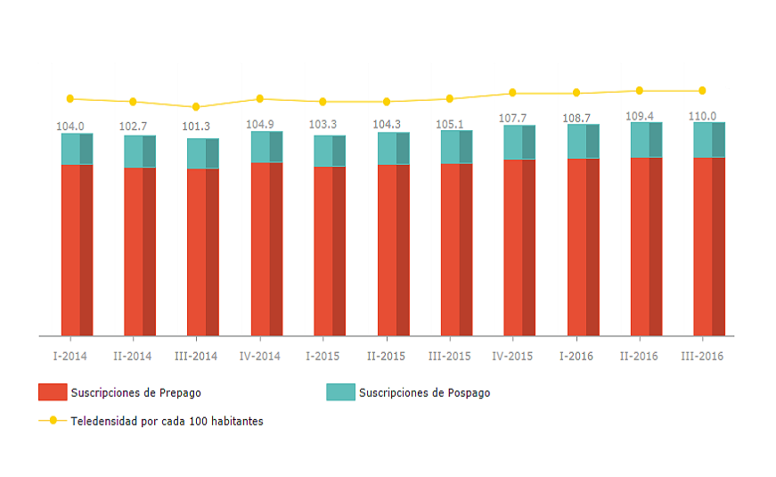
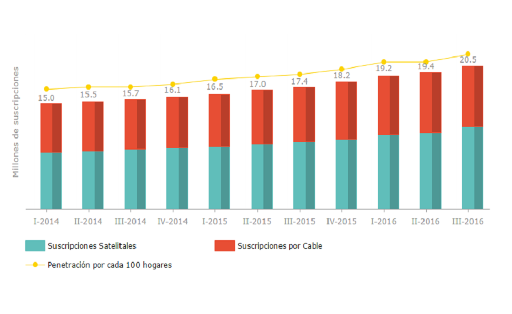
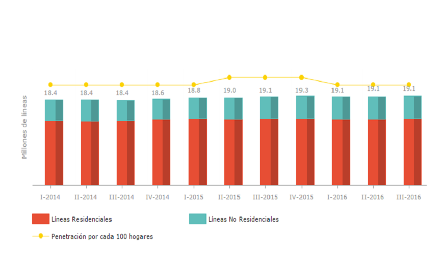
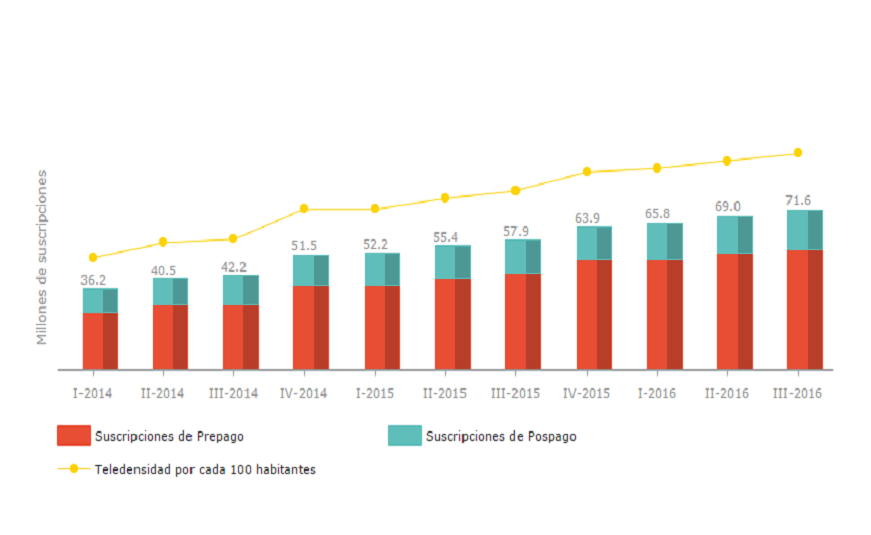
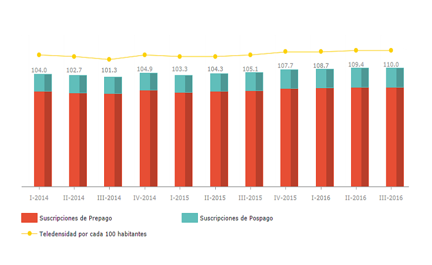
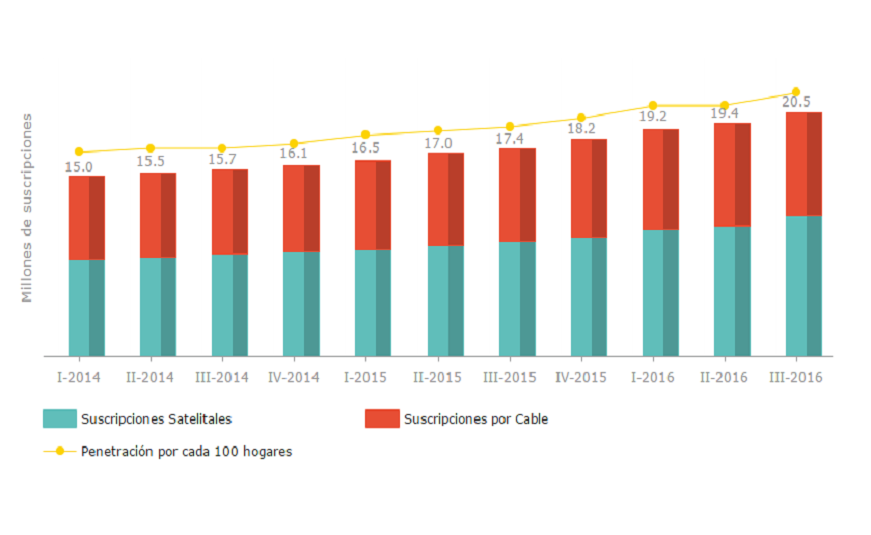

MEXICO
STATISTICS
FIXED TELEPHONY SUBSCRIBERS (per 100 households) MOBILE BROADBAND SUBSCRIBERS (100 inhabitants)
 MOBILE TELEPHONY SUBSCRIBERS (100 inhabitants) PAY TV SUBSCRIBERS (per 100 households)
 REGULATORY ENTITIES


MEXICO
FIXED TELEPHONY SUBSCRIBERS (per 100 households) MOBILE BROADBAND SUBSCRIBERS (100 inhabitants)
 MOBILE TELEPHONY SUBSCRIBERS (100 inhabitants) PAY TV SUBSCRIBERS (per 100 households)
 